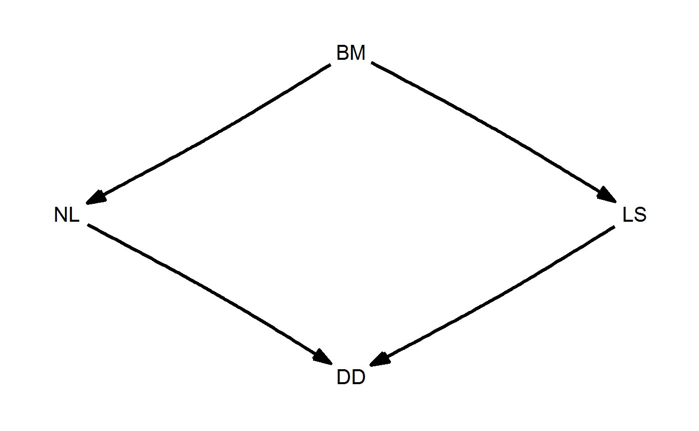
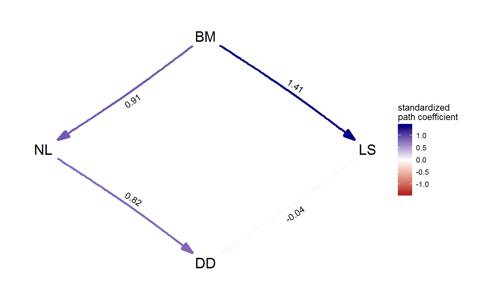
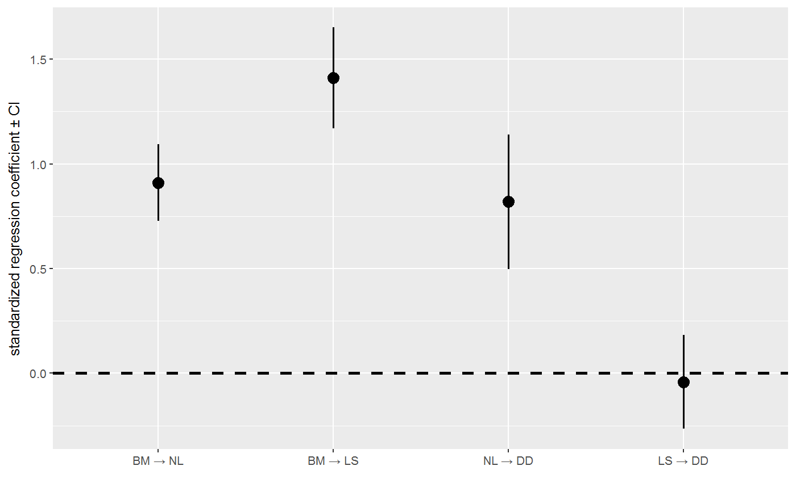
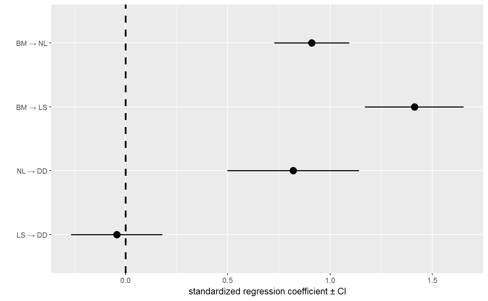

Plot path coefficients and their confidence intervals.
coef_plot(fitted_DAG, reverse_order = FALSE)
| fitted_DAG | A fitted DAG, usually obtained by |
|---|---|
| reverse_order | If |
A ggplot object.
coef_plot(d_fitted)# to create a horizontal version, use this: coef_plot(d_fitted, reverse_order = TRUE) + ggplot2::coord_flip()